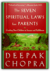
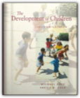
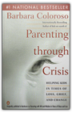
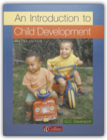
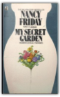
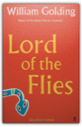
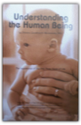
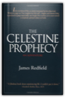

The 48 Laws of Power
817649030X
Gem Pocket Twentieth Century Dictionary: Urdu into English
M. Raza-Ul-Haq Badakhani
0870529110
Weight Training for the over 35's
E. G. Bartlett, Mary Southall
0715389572

The Seven Spiritual Laws for Parents: Guiding Your Children to Success and Fulfillment
Deepak Chopra
060960077X
The Seven Spiritual Laws of Success was a phenomenally successful book—more than 1,600,000 copies were sold—and as copies were passed between friends and loved ones, it touched millions more lives. Its author, Deepak Chopra, received thousands of letters from readers, many of whom expressed the desire to convey those same principles to their children, along with questions about how to do so.This book, The Seven Spiritual Laws for Parents, is Dr. Chopra's answer to those letters and to parents around the world who wish to raise children with values that satisfy spiritual needs as well as create the experience of abundance. After a general discussion of parenting and the gift of spirit, this book explores specific ways to practice the Seven Spiritual Laws as a family, how to convey these laws to children depending on their ages, and how to embody them in age-specific activities each day, beginning on Sundays with the Law of Pure Potentiality.
The Seven Spiritual Laws for Parents moves us beyond private triumphs and failures to experience the spiritual nature of communion with family, to share with those closest to us the infinite riches of innocence and love.

The Development of Children
Michael Cole, Sheila R. Cole
0716722380
This book presents the science of child development without losing sight of the child. Its emphasis on cultural context, integration of the diverse aspects of development, authoratitive presentation of competing theories, and scientific integrity combine to form a high standard of text. The second edition offers, greater accessibility, more balanced coverage, and new full-colour art, featuring photographs from a variety of cultures. Significant revisions include earlier and clearer treatment of infancy; expanded discussion of middle childhood; new coverage of topics such as the development of emotion, theory of mind, and ethnic identity. Ancillary texts include an instructors manual with test questions, a study guide, computerized test banks (for MAC and IBM), overhead transparencies and a book of readings.

Parenting Through Crisis Helping Kids In Time Of Loss Grief And
Barbara Coloroso
0140283838

Disclosure
Michael Crichton
0345391055
"Expertly crafted, ingenious and absorbing." The Philadelphia Inquirer.The #1 Bestseller by the author of "Jurassic Park." As he did in "Rising Sun," Crichton focuses on a topic as close as today's newspaper headlines: sexual harassment.
Tom Sanders is an up-and-coming executive at the computer firm DigiCom. When his new boss turns out to be a woman who is both his former lover and a business rival, Sanders determines to be professional. But after a closed-door meeting, the woman accuses him of sexual harassment. It's her word against his, and suddenly Sanders finds himself caught in a nightmarish web of deceit in which he is branded as the villian. As he scrambles to save his career and his reputation, Sanders uncovers an electronic trail into DigiCom's secrets . . . and the cynical scheme devised to bring him down.
Introduction to Child Development
G C Davenport
0003223558
An Introduction to Child Development has established itself as the most popular and useful text available on child development. In a comprehensive coverage of the subject, the book explores all areas of child development, from the theories of Piaget and Freud to a discussion of the nature of intelligence and the effects of the media on aggression in children. This book features: * background readings illustrating key points * examination style questions * summary boxes * end of topic reviews * marginal comments, questions and activities * a user-friendly, no nonsense approach An Introduction to Child Development is widely used by students of GCSE Psychology, and as an introductory text to child development, nursery nursing, and some BTEC and vocational A level courses. It is also valuable to people working with children and interested parents.

My Secret Garden
Nancy friday
0671786067
When it first appeared, My Secret Garden created a storm of outrage and exhilaration. Women who read it were astonished to find in its pages the hidden content of their own sexual fantasies. More outspoken, graphic, and taboo-shattering than any book before its time, My Secret Garden quickly became the classic study of female sexuality. Today, millions of women have made Nancy Friday's groundbreaking bestseller a mainstay of feminist literature — a liberating force that adds a sensational new dimension to their sexual fantasies and lives.

Lord of the Flies, Educational Edition
William Golding
0571056865
Golding's best-known novel is the story of a group of boys who, after a plane crash, set up a fragile community on a previously uninhabited island. As memories of home recede and the blood from frenzied pig-hunts arouses them, the boys' childish fear turns into something deeper and more primitive.

MARS AND VENUS TOGETHER FOREVER : Relationship Skills for Lasting Love
John Gray
0733603645

'MEN ARE FROM MARS, WOMEN ARE FROM VENUS: A PRACTICAL GUIDE FOR IMPROVING COMMUNICATION AND GETTING WHAT YOU WANT IN YOUR RELATIONSHIPS'
JOHN GRAY
072252840X
Self help and intertainment.

Age Of Turbulence - Adventures In A New World
ALAN GREENSPAN
0713999829
2007 hardcover ex-library without writing but has usual library markings

The Toddler's Busy Book: 365 Creative Games and Activities to Keep Your 1 1/2- to 3-Year-Old Busy
Trish Kuffner
0671317741
The Toddler’s Busy Book is a must-read for anyone raising or teaching toddlers! This book contains over 365 activities (one for each day of the year) for kids ages 18 months to 3 years, using items found around the home. It shows parents and day-care providers how to prevent boredom during the longest stretches of indoor weather, stimulate a child’s natural curiosity with entertaining math, language, and motor-skills activities, encourage a child’s physical, mental, and emotional growth, celebrate holidays and other occasions with special projects and activities, and keep toddlers occupied during long car trips or while running errands. The Toddler's Busy Book is written with warmth and sprinkled with humor and insight.
Understanding the Human Being
Silvana Quattro Montanaro
187934100X
The Importance of the First Three Years of Life

Absorbent Mind
Maria Montessori
1851090878
In response to the crisis in American education, more than five thousand public and private schools across the nation have adopted the timeless Montessori Method of teaching, of which this book is the cornerstone. Written by the women whose name is synonymous worldwide with child development theory, The Absorbent Mind takes its title from the phrase that the inspired Italian doctor coined to characterize the child's most crucial developmental stage: the first six years.A new foreword by John Chattin-McNichols, Ph.D., President of the American Montessori Society, places this classic book in a contemporary context, offering an intelligent discussion of current thinking in child education.

Discovery of the Child
Maria Montessori
185109086X
Maria Montessori founded a school for children with learning disabilities, as well as a new system of education that is followed all around the world.
With All Due Respect: Keys for Building Effective School Discipline
Ronald G. Morrish
0968113125
This book features classroom management strategies from a veteran educator and behavior consultant. Ronald Morrish provides practical insights that will teach you how to increase teaching time, improve student work habits, reinstate authority to you as the teacher, and decrease your reliance on punishment as a motivational strategy.
The Handbook for Spiritual Warfare
Ed Murphy
0840776950
Newly updated and revised, including new material on our warfare with the world and the dangers and pitfalls of careless spiritual warfare, The Handbook for Spiritual Warfare offers biblical guidance and hope for Christians fighting the spiritual war for Christ.Dr. Ed Murphy offers a thorough look at spiritual warfare and helps you understand and overcome evil in all three dimensions: the World, the Flesh, and the Devil.
Further Along the Road Less Traveled: The Unending Journey Toward Spiritual Growth
M. Scott Peck
0671892886
The long-awaited sequel to The Road Less Traveled deals with blame and forgiveness, self-love vs. self-esteem, the New Age movement, the illusion of romantic love, and the mystery of death. Reprint. 200,000 first printing. Serial rights, New Age Journal.
The Celestine Prophecy: An Adventure
James Redfield
044651862X
You have never read a book like this before — a book that comes along once in a lifetime to change lives forever.In the rain forests of Peru, an ancient manuscript has been discovered. Within its pages are 9 key insights into life itself — insights each human being is predicted to grasp sequentially; one insight, then another, as we move toward a completely spiritual culture on Earth. Drawing on ancient wisdom, it tells you how to make connections among the events happening in your life right now and lets you see what is going to happen to you in the years to come. The story it tells is a gripping one of adventure and discovery, but it is also a guidebook that has the power to crystallize your perceptions of why you are where you are in life and to direct your steps with a new energy and optimisim as you head into tomorrow.

The Black Swan: The Impact of the Highly Improbable
Nassim Nicholas Taleb
0141034599
EE-34

Babytalk
Sally Ward
0099297205